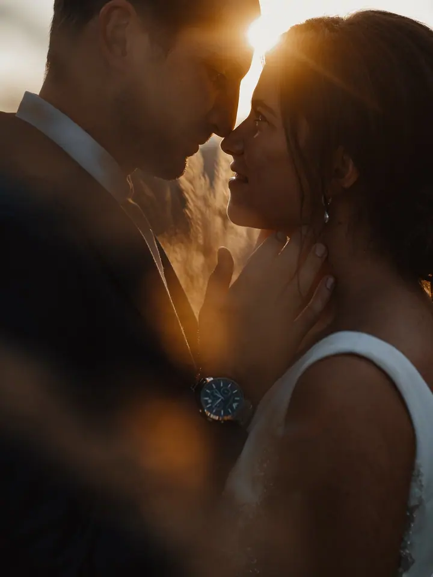
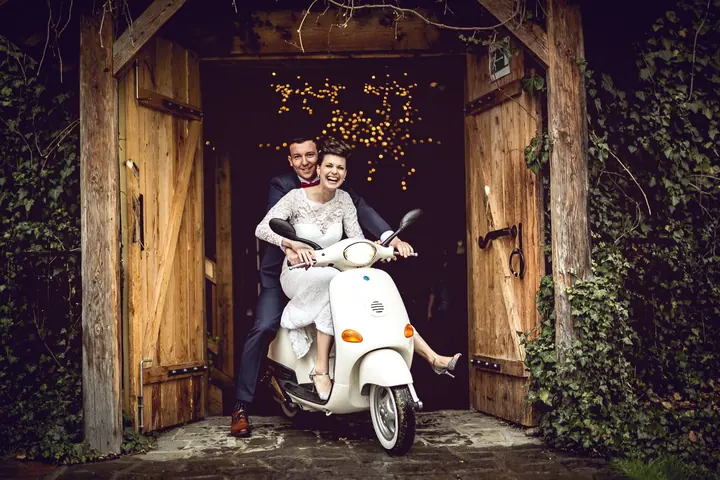

jedna
Svatební fotografie
Svatbu fotím celou, od příprav přes obřad až po večerní oslavu a ohňostroj. Na portrétech s vámi rád vyrazím do pole nebo do lesa, kde je teplé podvečerní světlo.


Jmenuji se Petr Huser a jsem svatební a reklamní fotograf, narozený ve Zlíně. Fotím svatby ve Zlíně, v Praze i jinde v Česku a do svatebních fotek nosím cit pro světlo a detail, který mám z práce pro módu a reklamu.
Více o mně
Co fotím
jedna
Svatbu fotím celou, od příprav přes obřad až po večerní oslavu a ohňostroj. Na portrétech s vámi rád vyrazím do pole nebo do lesa, kde je teplé podvečerní světlo.
dvě
Specializuji se na reklamní a módní fotografii. Fotil jsem pro značky jako Puma, Wimbledon, Bata nebo Festina a moje práce vyšla v Harper’s Bazaar, Top Fashion a Forbesu.

Den, na který se budete rádi dívat.

Za objektivem
Jsem český komerční fotograf, narodil jsem se ve Zlíně a dnes fotím ve Zlíně i v Praze. Specializuji se na reklamní a módní fotografii a pracoval jsem se značkami jako Puma, Wimbledon, Bata nebo Festina. Moje fotky vyšly v Harper’s Bazaar, Top Fashion nebo Forbesu.
Před objektivem mi stály Lucie Bílá, Simona Krainová nebo Taňa Pauhofová. Byl jsem porotcem v Miss Czech Republic a oficiálním fotografem na soustředění na Zanzibaru v roce 2022 a v Emirátech v roce 2023. Jako člen týmu jsem se podílel na prvním místě v Red Dot Design Award 2021 a v Czech Industry Challenge 2022.
Svatby fotím stejně pečlivě jako kampaně. Hledám teplé světlo, opravdové emoce a drobnosti, které by jinak zapadly: prstýnky, boty celé rodiny, tanec s družičkami. Chci, abyste se ke svým fotkám rádi vraceli.
Petr
Pošlete mi e-mail s datem, místem a tím, co plánujete. E-mail mi vyhovuje víc než telefon.
Probereme průběh dne nebo zadání focení, místo a to, na čem vám nejvíc záleží.
Jsem u toho od příprav až po večer a hlídám světlo i detaily. Pro portréty si najdeme chvíli v podvečer, kdy je světlo nejteplejší.
Fotky pečlivě vyberu a upravím a pošlu vám je v termínu, na kterém se domluvíme.
Portfolio
Fotografie jsou ilustrační
Otázky
Nejčastěji ve Zlíně a v Praze. Za svatbou nebo zakázkou rád přijedu i jinam, stačí napsat, kde to bude.
Ano, reklamní a módní fotografie je moje hlavní specializace. Poptávky na komerční a módní focení prosím posílejte na info@petrhuser.com.
Nejlépe e-mailem, ten preferuji. Zavolat můžete i na +420 773 855 088.
Cena záleží na délce focení, místě a rozsahu. Napište mi pár podrobností a pošlu vám nabídku přímo pro vás.
Napište pár vět o tom, co si představujete. · +420 773 855 088